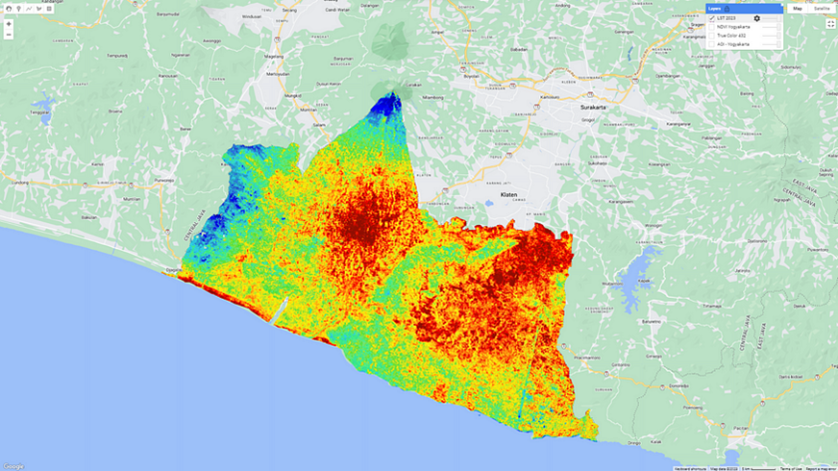
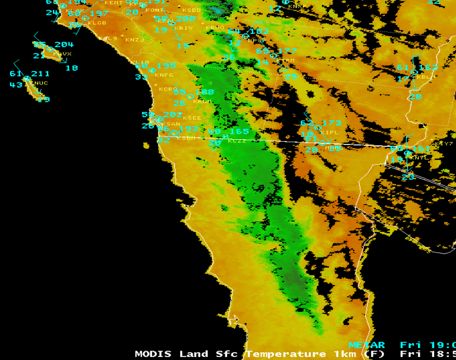

9 Week 9 Temperature
9.1 Summary
9.1.1 Explore how to deal with temperature across urban areas
9.1.1.1 Landsat
Landsat satellites monitor urban ground temperatures through their on-board thermal infrared sensors, which use thermal infrared energy reflected and radiated from the Earth’s surface to measure temperature.
It measures the Earth’s surface temperature in Kelvin and is an important geophysical parameter in global energy balance studies and hydrologic modeling. Surface temperature data are also useful for monitoring crop and vegetation health, and extreme heat events such as natural disasters (e.g., volcanic eruptions, wildfires), and urban heat island effects.

9.1.1.2 MODIS
The Moderate Resolution Imaging Spectroradiometer (MODIS) sensor is carried on both NASA’s Aqua and Terra satellites that have near polar orbits resulting in two images per satellite per day. Image acquisition on Aqua is ∼1330 and 0130 h and Terra is ∼1030 and 2230 h, all local time. This is a high temporal resolution.
MODIS data are used for a wide variety of Atmosphere, Land, and Ocean applications. These data are transmitted to the Earth in real-time and can be received and processed by anyone with the appropriate equipment and software.

9.1.2 Temperature Issues - Urban Heat Island (UHI)
An urban heat island (UHI) is a large urban area that is much warmer than the surrounding rural areas. It tends to arise in areas of high activity and population. Under the global warming trend, urban areas that suffer from the UHI effect will face even harsher conditions.
9.1.2.1 Causes of Formation + Major Hazards

9.2 Applications
The heat island effect is caused by the absorption and re-radiation of solar energy by buildings, roads and other man-made surfaces, and Landsat satellites are able to capture such temperature differences because they carry thermal infrared sensors capable of detecting surface temperatures. MODIS-specific thermal infrared bands are also used to measure the radiant temperature of the Earth’s surface, and these bands can penetrate clouds and certain pollutants in the atmosphere to detect thermal radiation directly from the surface, thus providing information on ground temperatures. Although they are both useful in the study of the heat island effect, there are some key differences between them (resolution) that affect their application and the results of their analyses.
In a study of urban temperature monitoring in Beijing, Wu et al. (2020) radiometrically calibrated and geometrically corrected Landsat 8 image data (with an accuracy of less than 0.5 pixels), and it is evident from the results that Landsat has a high spatial resolution of about 30-100 metres for thermal infrared sensors. This allows it to capture in detail the temperature distribution within a city, including individual buildings and small-scale changes in ground cover.
Satellite Ts data with high spatial resolution (like Landsat) have the advantage of reflecting UHI texture information (Gluch et al. 2006), whereas satellite Ts data with high temporal resolution and low spatial resolution have the advantage of characterizing the seasonal variability in UHIs (Pu et al. 2006).
In Wang et al.’s (2017) study of surface temperatures in Beijing using MODIS data, it was seen that MODIS has a lower spatial resolution compared to Landsat and its thermal infrared channel has a resolution of 1 km. However, this implies that MODIS is more advantageous for large-scale temperature monitoring and analysis, even although this Ts product was resampled to 1 km2. Validation studies have demonstrated the reasonable accuracy of this Ts product, which has an error standard deviation of 1–2°C
In numerous studies examining urban surface temperatures outside of Beijing (Sidiqui et al. 2016), (Bonafoni and Keeratikasikorn 2018), Landsat and MODIS data are often used in conjunction to capitalise on their respective strengths. For example, MODIS data can be used to identify large-scale temperature trends and patterns, while Landsat data can be used for more detailed local analyses. In this way, researchers can gain a more comprehensive understanding of the urban heat island effect and thus provide more effective recommendations for urban planning and management.
Ps. In terms of monitoring volcanoes and disaster mitigation through temperature changes, satellite-based monitoring methods are more useful for understanding past events as well as future eruption potential of volcanoes (Chan et al. 2021). This approach is most applicable especially when volcanoes are difficult to access or when the budget for volcano monitoring is insufficient.
9.3 Reflections
I have always seen the term heat island effect in the literature on cities in other courses, and this week has given me the opportunity to understand in detail what it is, what causes changes in urban surface temperatures and how remote sensing can be used to monitor changes, and that the range of climatic or environmental problems caused by surface temperatures is complex and requires a combination of factors and measures.
Most importantly, I realised that human beings have such a big impact on the environment. But happily remote sensing can make a big contribution to monitoring temperature, which is very helpful in finding effective solutions and related policies.
^_^ I’m glad you read this and I hope you enjoyed my remote sensing diary!
9.4 References
Bonafoni, S. and Keeratikasikorn, C. (2018). ‘Land Surface Temperature and Urban Density: Multiyear Modeling and Relationship Analysis Using MODIS and Landsat Data’. Remote Sensing. Multidisciplinary Digital Publishing Institute, 10 (9), p. 1471. doi: 10.3390/rs10091471.
Chan, H.-P., Konstantinou, K. I. and Blackett, M. (2021). ‘Spatio-temporal surface temperature variations detected by satellite thermal infrared images at Merapi volcano, Indonesia’. Journal of Volcanology and Geothermal Research, 420, p. 107405. doi: 10.1016/j.jvolgeores.2021.107405.
Gluch, R., Quattrochi, D. A. and Luvall, J. C. (2006). ‘A multi-scale approach to urban thermal analysis’. Remote Sensing of Environment. (Thermal Remote Sensing of Urban Areas), 104 (2), pp. 123–132. doi: 10.1016/j.rse.2006.01.025.
Pu, R., Gong, P., Michishita, R. and Sasagawa, T. (2006). ‘Assessment of multi-resolution and multi-sensor data for urban surface temperature retrieval’. Remote Sensing of Environment. (Thermal Remote Sensing of Urban Areas), 104 (2), pp. 211–225. doi: 10.1016/j.rse.2005.09.022.
Sidiqui, P., Huete, A. and Devadas, R. (2016). ‘Spatio-temporal mapping and monitoring of Urban Heat Island patterns over Sydney, Australia using MODIS and Landsat-8’. in 2016 4th International Workshop on Earth Observation and Remote Sensing Applications (EORSA). 2016 4th International Workshop on Earth Observation and Remote Sensing Applications (EORSA), pp. 217–221. doi: 10.1109/EORSA.2016.7552800.
Wang, K., Jiang, S., Wang, J., Zhou, C., Wang, X. and Lee, X. (2017). ‘Comparing the diurnal and seasonal variabilities of atmospheric and surface urban heat islands based on the Beijing urban meteorological network’. Journal of Geophysical Research: Atmospheres, 122 (4), pp. 2131–2154. doi: 10.1002/2016JD025304.
Wu, Z., Yao, L., Zhuang, M. and Ren, Y. (2020). ‘Detecting factors controlling spatial patterns in urban land surface temperatures: A case study of Beijing’. Sustainable Cities and Society, 63, p. 102454. doi: 10.1016/j.scs.2020.102454.